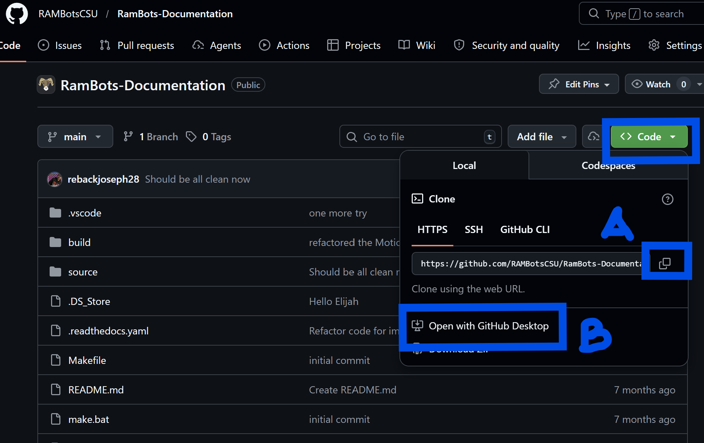

Github Basics
To Clone a Repository

Method A and B buttons
Method A: Github Desktop
Click the “Code” button on the repository page and select “Open with GitHub Desktop”. This will open the GitHub Desktop application and prompt you to choose a local path to clone the repository to. After selecting the path, click “Clone” to start the cloning process.
Method B: Through the Terminal
Warning
This section is a bit more difficult and requires github terminal authorization, see the “Github Python” how-to for more information on how to set up terminal authorization.
To Clone a Repository using terminal, you can use the following command:
`
git clone <repository_url>
`
For instance, if you want to clone the python Pi Code repository, you would use:
`
git clone https://github.com/RAMBotsCSU/platform.git
`
To Verify the Cloning Process
After cloning the repository, you can navigate to the cloned directory using the terminal and list the files to verify that the cloning process was successful. Use the following commands:
In general, to check everything is successful, and to check other things run:
`
git status
`
To Make a Branch
To create a new branch, you can use the following command in terminal:
`
git checkout -b <branch_name>
`
For example, if you want to create a branch called “feature-branch”, you would use:
`
git checkout -b feature-branch
`
To Upload Changes
To upload your changes to the remote repository, you can use the following commands:
`
git add .
git commit -m "Your commit message"
git push origin <branch_name>
`
To Download New Changes
To download new changes from the remote repository, you can use the following command:
`
git pull origin <branch_name>
`
For example, if you want to pull changes from the “main” branch, you would use:
`
git pull origin main
`